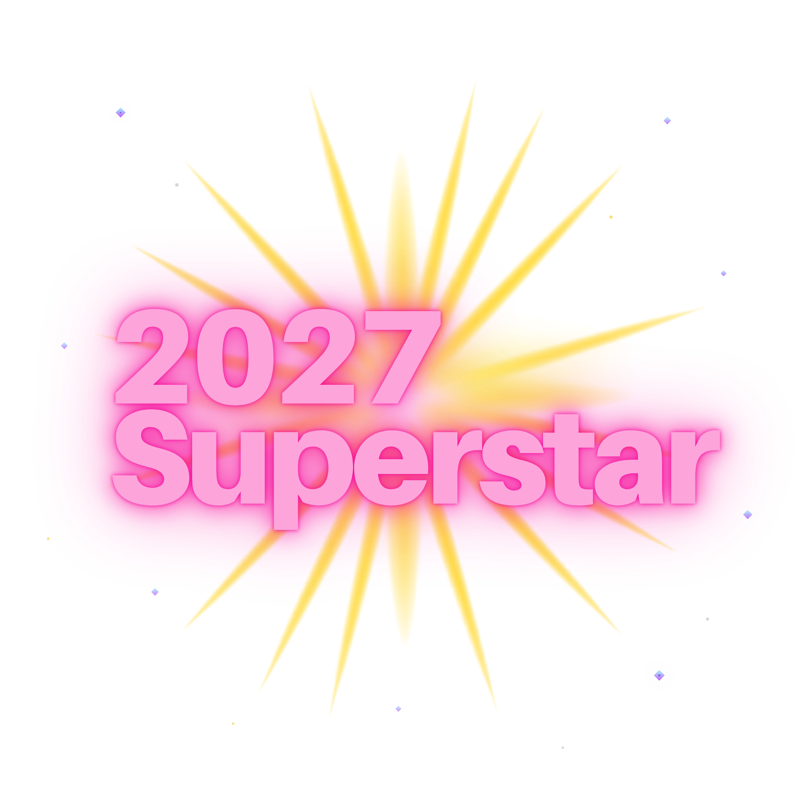

Aletheia è il percorso per chi sa che dentro di sé c'è qualcosa di grande — e vuole finalmente dargli una forma, una voce, un business. Siamo a settembre 2026, ma i tuoi occhi, la tua visione, la tua strategia guardano già al 2027. Qui balliamo verso quel futuro, insieme.
Entra nel canale 2027 SUPERSTARSe stai annuendo mentre leggi, sei esattamente nel posto giusto.
Non c'è niente di sbagliato in te. Stai solo aspettando di incontrare te stessa.
Prima di costruire un business, prima di scegliere una nicchia, prima di capire come vendere — devi incontrare te stessa. Devi capire cosa ti accende, cosa ti muove, cosa vuoi portare nel mondo. Solo da lì nasce qualcosa di reale, qualcosa che regge nel tempo, qualcosa di cui ti innamori.
Il business non è uno strumento per guadagnare. È un pezzo della tua vita. È il modo in cui esprimi chi sei e porti valore al mondo. E quando lo costruisci a partire da chi sei davvero — tutto cambia.
"Togliere il velo.
Rivelare ciò che è nascosto.
La verità che emerge."
Aletheia non significa trovare qualcosa di nuovo. Significa scoprire ciò che è sempre stato lì — dentro di te — e che aspettava solo di essere visto. Questo percorso è una rivelazione, non una costruzione dall'esterno.
Sai chi sei, cosa ti accende, qual è il tuo valore unico. Non devi più cercare la tua "nicchia" — sei tu la nicchia.
Non un lavoro in più. Un sistema che nasce da te, cresce con te e serve la tua vita — non il contrario.
Capisci la differenza tra chi aspetta e chi crea. Entri in una nuova identità — quella di chi costruisce qualcosa di proprio.
Smetti di vedere la vendita come qualcosa di cui vergognarti. Impari ad amarla, perché capisci che è uno scambio di valore puro.
Sai come comunicare chi sei in modo che le persone giuste ti trovino, ti riconoscano, vogliano stare nel tuo mondo.
Non la libertà totale dall'oggi al domani — ma la certezza che ci stai andando. E già adesso ami il percorso.
Si parte con 2027 SUPERSTAR, la lezione introduttiva per entrare subito nel mood del percorso. Poi due Masterclass — su identità, leadership, business e vendita — alternate a due sessioni di coaching per elaborare insieme quello che emerge. Cinque settimane in tutto: alla fine, avrai le fondamenta di un business che è davvero tuo.

Prima ancora di scoprire chi sei, ti porto a vedere dove stai andando. 2027 SUPERSTAR è la lezione introduttiva di Aletheia: un assaggio dell'energia, del ritmo e della visione che troverai in tutto il percorso. Non è teoria — è il primo passo di danza verso la versione di te che nel 2027 brilla di luce propria. Si segue nel canale Telegram dedicato, insieme a chi ha scelto di iniziare questo cammino.
Entra nel canale 2027 SUPERSTAR →Una masterclass in due parti: prima incontri te stessa, poi trasformi quell'incontro in mindset e leadership.
Prima di costruire qualsiasi cosa, devi sapere chi sei. Non chi vuoi sembrare, non chi altri si aspettano che tu sia — chi sei davvero. Esploriamo le tue unicità, i tuoi valori, le tue sfaccettature. Capisci che tu sei già il prodotto più potente che hai da offrire al mondo. E che il tuo business non è separato dalla tua vita — è un'estensione di essa.
C'è una differenza radicale tra chi aspetta che le cose accadano e chi le crea. Entriamo nel mindset da freelance: come pensi, come prendi decisioni, come gestisci l'incertezza con entusiasmo invece che con paura. Scopri la leadership entusiasta — guidare te stessa e gli altri con energia, autenticità e visione.
Una sessione di gruppo per fermarti, fare domande e portare alla luce i primi dubbi. Elaboriamo insieme quello che è emerso nella prima Masterclass — chi sei, cosa ti accende, e i primi passi del tuo mindset da freelance. Non si aggiungono contenuti nuovi: si va in profondità su quelli che hai già.
La seconda masterclass ti porta dalla visione alla struttura: come costruire il tuo ecosistema di business, e come venderlo restando fedele a te stessa.
Un business non è un prodotto. È un ecosistema — come un albero con radici, rami, frutti. Capisci come costruire la tua offerta partendo dai tuoi talenti e valori, come creare qualcosa di sostenibile che ti dia libertà economica e geografica, e come immaginare un business digitale che possa servire persone in tutto il mondo.
La vendita è lo scambio più puro che esiste: dai qualcosa di reale, ricevi in cambio. Trasformi completamente il modo in cui vedi la vendita. Non è manipolazione, non è pressione, non è qualcosa di cui vergognarti. È il tuo modo di portare amore al mondo — e i soldi sono solo la conferma che il tuo valore è stato ricevuto.
L'ultima sessione di gruppo del percorso: spazio per elaborare la tua offerta, affrontare i dubbi sulla vendita, e uscire con un piano concreto per i tuoi prossimi passi. Qui il percorso diventa davvero tuo.
Una per settimana, in diretta. Non registrazioni da vedere da soli — presenza reale, domande in tempo reale, connessione vera.
Uno spazio sicuro e accogliente dove confrontarti, condividere, ricevere supporto durante tutto il percorso. Non sei sola.
Spazio per elaborare, fare domande, ricevere feedback diretto. Dove il percorso diventa personale.
Non un gruppo qualunque. Persone che condividono la tua visione, la tua energia, il tuo desiderio di creare qualcosa di vero.
Ho passato anni a fare "la cosa giusta". Studi tecnici, carriera solida, un percorso lineare che sulla carta era perfetto. Ma dentro sentivo che mancava qualcosa. Quella scintilla. Quell'entusiasmo. Quella sensazione di essere davvero al posto giusto.
Ho attraversato il mio personale percorso di Aletheia — mi sono tolta il velo, ho scoperto chi ero davvero, e ho costruito un business che è un'estensione di me. Non perfetto, ma vero. Non senza fatica, ma con entusiasmo.
Oggi accompagno persone come te — ambiziose, intelligenti, pronte — a fare lo stesso. Con tutto l'entusiasmo, la giocosità e la profondità che ho imparato a portare in tutto quello che faccio.
Il primo passo di Aletheia inizia nel canale Telegram di 2027 SUPERSTAR: la lezione introduttiva, gratuita, per entrare nell'energia del percorso e capire se è il momento giusto per te.
Entra nel canale 2027 SUPERSTAR →Non ho ancora un'idea di business. Posso partecipare lo stesso?
Assolutamente sì — anzi, è il posto perfetto per partire. Il primo modulo è proprio dedicato a scoprire chi sei e cosa vuoi portare nel mondo. Non hai bisogno di avere già un'idea chiara: hai bisogno di scoprirla, e lo facciamo insieme.
Ho già un piccolo progetto online ma sono bloccata. È utile per me?
Più che mai. Spesso chi è bloccata non ha bisogno di nuove strategie — ha bisogno di tornare alle fondamenta. Capire chi è davvero, cosa vuole comunicare, perché fa quello che fa. Aletheia ti aiuta a ricostruire dalle radici, con chiarezza e intenzione.
Quanto tempo devo dedicare ogni settimana?
Le lezioni live settimanali durano circa 90 minuti. Le coaching call di gruppo circa un'ora. Più il tempo che scegli di dedicare alla chat e alle riflessioni personali. Indicativamente 3-4 ore a settimana — ma ogni ora conta davvero.
Le lezioni sono registrate?
Sì, le lezioni live vengono registrate e rese disponibili, così puoi recuperarle se non riesci a partecipare in diretta. Ma ti incoraggio fortemente a esserci live — la magia succede nel vivo.
Questo percorso mi insegna a fare marketing?
No — e questa è una scelta precisa. Aletheia non è un corso di marketing. È un percorso di identità, leadership e business. Prima capisci chi sei e cosa costruisci, poi qualsiasi strategia di marketing diventa naturale e autentica. Le fondamenta vengono prima.
2027 SUPERSTAR è la porta d'ingresso ad Aletheia: entra nel canale, ascolta la lezione introduttiva, e scopri se è il momento giusto per te.
Entra nel canale 2027 SUPERSTAR →